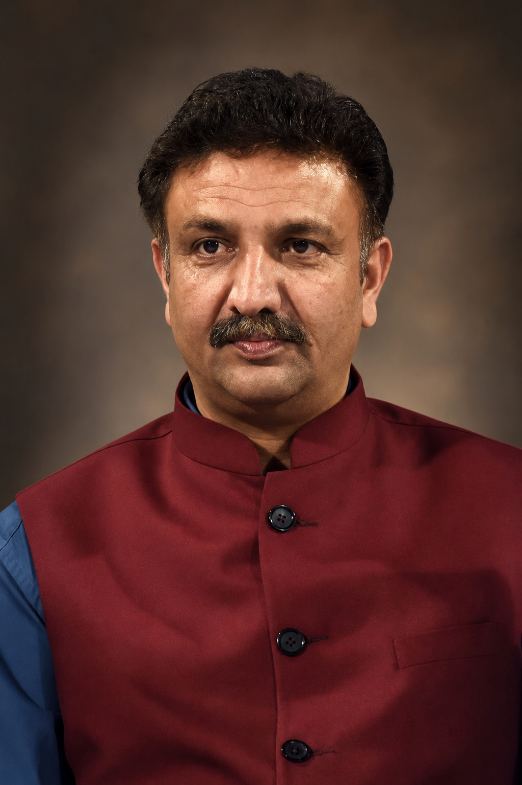
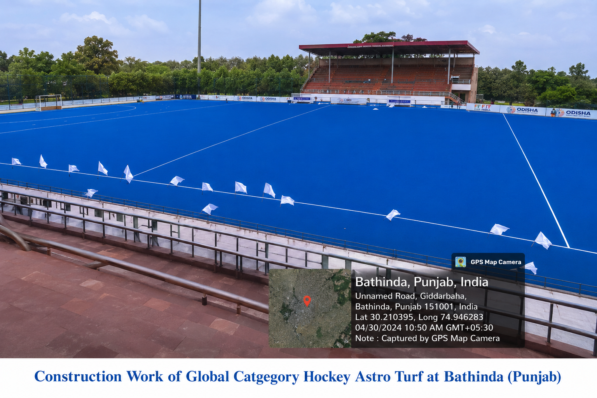
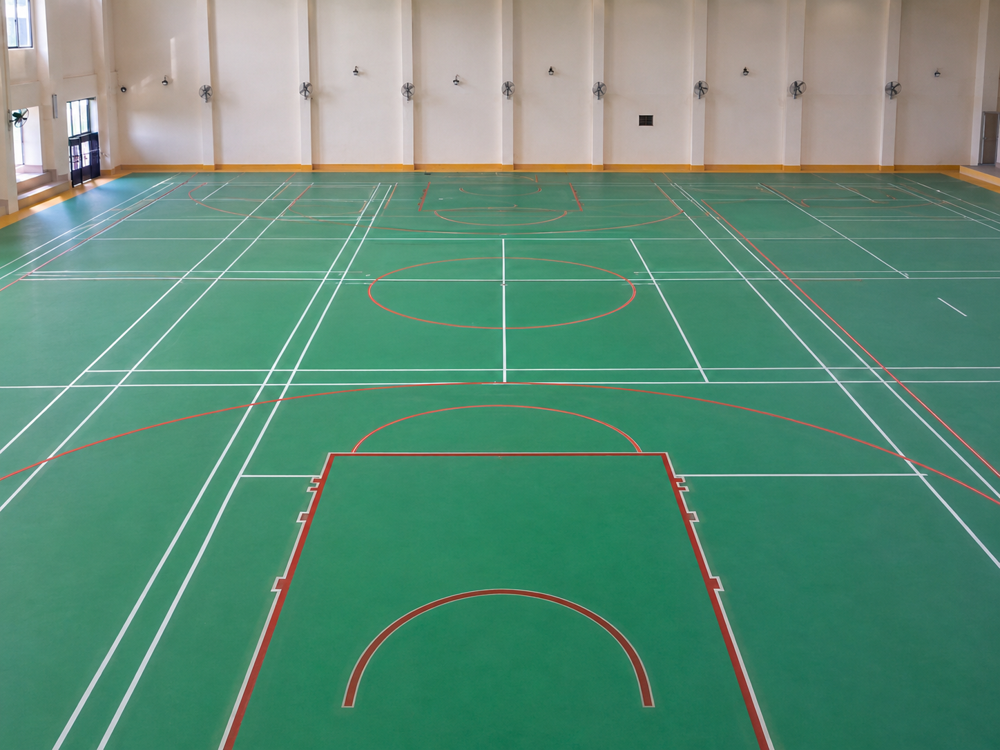
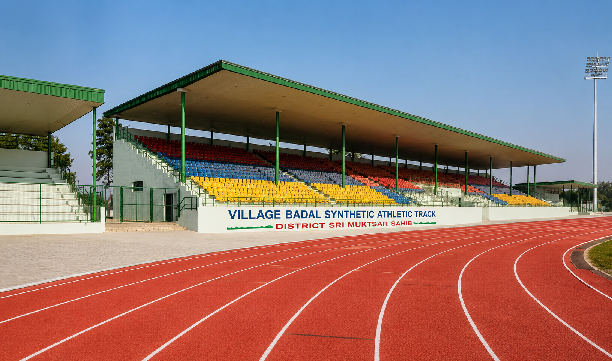
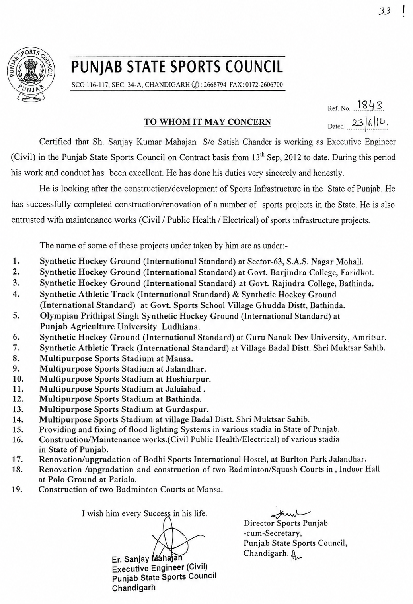

01
01
Hockey Infrastructure
Sector 63 Synthetic Hockey Ground
S.A.S. Nagar, Mohali, Punjab
A senior civil and structural engineering professional with 34 years of multidisciplinary experience, including more than 14 years dedicated to sports infrastructure planning, construction, quality control and project management.

Er. Sanjay Mahajan is a senior civil and structural engineering professional with 34 years of multidisciplinary experience, including more than 14 years dedicated to specialized sports infrastructure development.
During his tenure with the Punjab State Sports Council, he was associated with the construction, upgrading, inspection and technical management of sports facilities across Punjab. His documented portfolio includes international-standard synthetic hockey grounds, athletic tracks, multipurpose stadiums, indoor courts, swimming facilities and supporting public infrastructure.
His work combines structural engineering, surveying, estimation, tender documentation, contractor coordination, quality control, public-health systems and government project administration.
A career built around technical responsibility, quality-focused execution and the development of long-term public sports assets.
Civil, structural, industrial, institutional and public infrastructure experience.
Specialized involvement in sports-facility development and technical project management.
Major sports infrastructure works recorded in professional service documentation.
Projects and facility-development assignments across multiple districts and institutions.
A categorized showcase of documented sports infrastructure assignments undertaken under Punjab State Sports Council leadership and execution support.

Development and execution support for international-standard synthetic hockey grounds across major academic and sports institutions in Punjab.

Specialized infrastructure involvement in the construction and technical coordination of synthetic athletic tracks built to international standards.
Construction and development support for multipurpose sports stadiums serving district-level and regional sports infrastructure requirements.

Public infrastructure support including lighting installations, maintenance works and civil/public-health/electrical systems for sports facilities.

Upgradation and renovation works connected to indoor sports environments and sports-hostel infrastructure.

Court development, indoor-hall renovation and specialized sports court construction projects executed within public sports facilities.
A selection of major hockey, athletics and multipurpose stadium infrastructure assignments documented by the Punjab State Sports Council.
01
S.A.S. Nagar, Mohali, Punjab
 02
02
Faridkot, Punjab
Bathinda, Punjab
 04
04
Ghudda, District Bathinda
 05
05
Punjab Agricultural University, Ludhiana
 06
06
Amritsar, Punjab
07
Ghudda, District Bathinda

08District Sri Muktsar Sahib
 09
09
Mansa, Punjab
10
Jalandhar, Punjab
 11
11
Hoshiarpur, Punjab
 12
12
Bathinda, Punjab
Expand the record below to view the complete sports-infrastructure assignment list documented by the Punjab State Sports Council.

The project categories above are structured from the official sports infrastructure record issued by Punjab State Sports Council, documenting key assignments handled under Er. Sanjay Mahajan’s engineering role.